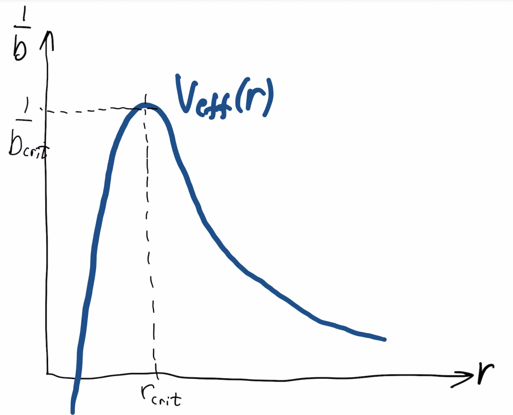

Et sort hull mottar jo lysstråler fra alle mulige retninger i hele universet, fra alle stjerner, galakser, gass-skyer som ligger rundt, nær og fjern. En god del av disse vil nødvendigvis ha lys som kommer inn med en vinkel som akkurat tilsvarer en impaktparameter bcrit. Dermed vil et sort hull hele tiden ha lys som går noen runder i sirkelbane ved rcrit = 3M før det går ut av banen, enten innover eller utover (blir vippet av bakketoppen på skråplanet). Dvs. at på kuleskallet som utgjøres av rcrit = 3M, den såkalte lyssfæren er det hele tiden lys i bane i forskjellige retninger. Hvis det skulle være en planet som går i bane rundt det sorte hullet på nøyaktig rcrit = 3M, hva ville du se når du ser opp på nattehimmelen?